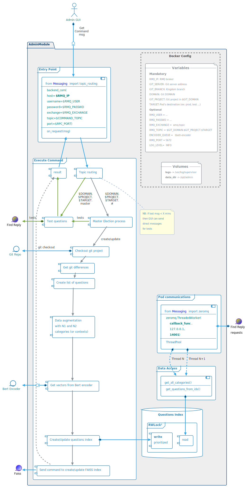
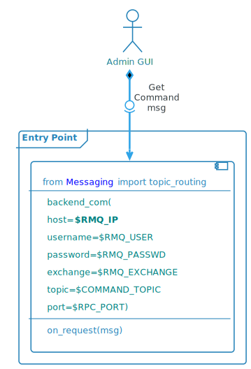
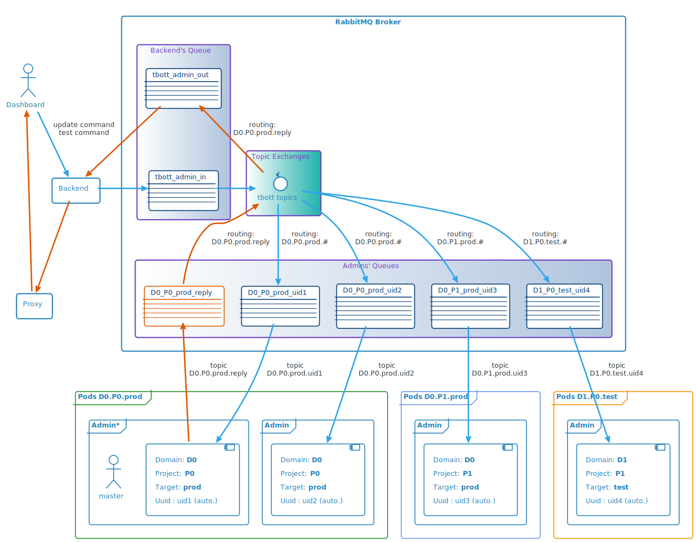

<!DOCTYPE html>
<html>
<head>
	<meta charset="utf-8" />
	<meta name="viewport" content="width=device-width, initial-scale=1.0, maximum-scale=1.0, user-scalable=no">
	<title>Admin</title>
	<link rel="stylesheet" href="../assets/css/reveal/reveal.css">
	<link rel="stylesheet" href="../assets/css/reveal/theme/mmtt.css">
	<link rel="stylesheet" href="../assets/css/highlight-hybrid.css">
	<link rel="stylesheet" href="../assets/css/slideshow.css">
	<style>
	.reveal .slides::after {
		background-image: url("../images/mmtt.png");
		background-repeat: no-repeat;
		content: "";
		height: 100px;
		left: 15px;
		position: absolute;
		right: 15px;
		top: 0;

		background-position: right;
	}
	</style>
	<!-- mmtt -->
</head>
<body>
	<div class="reveal">
		<div class="slides">
			<section data-markdown
			data-separator="(^#HSLIDE$|^#HSLIDE\?.*)"
			data-separator-vertical="(^#VSLIDE$|^#VSLIDE\?.*)"
			data-separator-notes="^Presentation note:"
			data-charset="utf-8">
			<script type="text/template">
				# Admin Module
#HSLIDE

## Architecture Overview
#HSLIDE

##  


#HSLIDE

## Attributes

- Centralise project&#39;s data
- Access point for the admin GUI
- Manage an index of Questions and Replies
 - This index can be saved on disk (pickle protocol) in a first stage
 - In a later development, the use of an Elasticsearch database instead of a local file could be considered

> NB: Many parts of previous version of maestro&#39;s code can be reused.

#HSLIDE

## Docker Configuration
#VSLIDE

### ENVIRONMENT VARIABLES

- <u>Mandatory</u>
 - **RMQ_IP**: RabbitMQ broker FQN or IP
 - **GIT_SERVER**: GOGS FQN or IP
 - **GIT_BRANCH**: Kingdom branch
 - **DOMAIN**: Client&#39;s domain name on GIT
 - **PROJECT**: Client&#39;s project name
 - **TARGET**: Pod&#39;s target (or branch) - ex: prod, test, ...
- <u>Optional</u>
 - RMQ_USER: *tbott*
 - RMQ_PASSWD: *M0m3n773ch*
 - RMQ_TOPIC: *$GIT_DOMAIN.$GIT_PROJECT.$TARGET*
 - RMQ_EXCHANGE: *amq.topic*
 - ENCODER_QUEUE: *tbott-encoder*
 - RMQ_PORT: *5672*
 - LOG_LEVEL: *INFO*

#VSLIDE

### VOLUMES

- logs: mounted in /var/log/supervisor
- data_dir: mounted in /opt/admin

#HSLIDE

## Admin Master election
#VSLIDE

### Messaging architecture

-  2 topic queues:
 - **Q** for questions (*$DOMAIN.$PROJECT.$TARGET*.**Q**.#)
 - **A** for answers  (*$DOMAIN.$PROJECT.$TARGET*.**A**.#)
 - All **Admin** modules see all *questions* and all *answers*

#VSLIDE

###  


#VSLIDE

### State diagram
#VSLIDE

###  


#HSLIDE

## Admin GUI commands

- Commands are atomics → no need for multithreading
- Commands are adressed to multiple Pods
- Only one pod, the master, reply to all commands



#VSLIDE

### Messaging architecture
#VSLIDE

####  


#VSLIDE

### Command processing
#VSLIDE

###  


#VSLIDE

### FAISS request example:
```
{"requests" : ["create"],
 "create" : [
               {"vector" : numpy.array , "id" : 1},
               {"vector" : numpy.array , "id" : 2}
             ]
} 
```
#VSLIDE

### Questions index example:
```python
{
  "git": {"path": DOMAIN/PROJECT
          "branch": test,
          "commit": git_commit_number
          }
  "references": {
    ref_1: {"ids": [id1, id2],
            "categories": {"N1": "n1_cat1", "N2": "n2_cat1"},
            "reply": "a reply..."
            }
    ref_2: {"ids": [id3],
            "categories": {"N1": "n1_cat2", "N2": "n2_cat2"},
            "reply": "another reply..."
            }
  }
  "all_categories": [{"N1": "n1_cat1", "N2": "n2_cat1"},
                      {"N1": "n1_cat2", "N2": "n2_cat2"}]
  "ids":{
    id1: {
        "ref": ref_1,
        "question": "a quetion",
        "augmented": false,
        "vector": np.array},
    id2: {
        "ref": ref_1,
        "question": "n1_cat, a quetion",
        "augmented": true,
        "vector": np.array},
    id3: {
        "ref": ref_1,
        "question": "n1_cat, n2_cat, a quetion",
        "augmented": true,
        "vector": np.array},
    id4: {
        "ref": ref_2,
        "question": "a 2nd quetion",
        "vector": np.array}
    }
}
```
#HSLIDE

## Questions Index queries

- Internal requests from **Find Reply** module
- Multithreaded
- Access the index through a **Read/Write Lock** with priority on **Write**
 - RWLock lib: https://github.com/elarivie/pyReaderWriterLock
- Exemple of context request:
 - request:```json
 { "request": "get_contexts"}
```
 - reply:```json
 { 
 "request": "get_contexts",
 "result":  [{"cat1": [{"cat1": "DDAY"}]},  
             {"cat1_cat2": [{"cat1": "D-DAY", "cat2": "Bilan"},  
                            {"cat1": "D-DAY", "cat2": "Cimetières"}
                           ]}]
 }
```
- Exemple of info request:
 - request:```json
 { "request": "get_candidates",
   "ids": [1, 2, 3]}
```
 - reply:```json
 { 
 "request": "get_candidates",
 "result":  [{"id": 1, "ref": "DDAY/dday/20", 
              "question": "Quelles sont les plages du débarquement ?", 
              "augmented": false, 
              "reply": "Les 5 plages du débarquement sont ...", 
              "cat1": "D-DAY", "cat2": "Lieux de Batailles"}, 
             {"id": 2, "ref": "DDAY/dday/20", 
              "question": "D-DAY, Quelles sont les plages du débarquement ?", 
              "augmented": true, 
              "reply": "Les 5 plages du débarquement sont ...", 
              "cat1": "D-DAY", "cat2": "Lieux de Batailles"},
             {"id": 3, "ref": "DDAY/dday/20", 
              "question": "D-DAY, Lieux de Batailles, Quelles sont les plages du débarquement ?", 
              "augmented": true, 
              "reply": "Les 5 plages du débarquement sont ...", "cat1": "D-DAY", "cat2": "Lieux de Batailles"}
             ]}
```
#VSLIDE
###  


			</script>
		</section>
	</div>
</div>

<script src="../assets/js/reveal/reveal.js"></script>
<script src="../assets/js/reveal/lib/head.min.js"></script>
<script src="../assets/js/jquery.js"></script>
<script>
Reveal.initialize({
	embedded: true,
	margin: 0.0,
	showNotes: false,
	transition: 'convex',
	autoSlide: 0,
	loop: false,
	center: true,
	rtl: false,
	shuffle: false,
	mouseWheel: false,
	history: true,

	// disabled for now
	// math: {
	// 	mathjax: 'https://cdn.mathjax.org/mathjax/latest/MathJax.js',
	// 	config: 'TeX-AMS_HTML-full'
	// },

	dependencies: [
		{ src: "../assets/js/reveal/plugin/markdown/marked.js"},
		{ src: "../assets/js/reveal/plugin/markdown/markdown.js"},
		{ src: "../assets/js/reveal/plugin/notes/notes.js"},
		// { src: "../assets/js/reveal/plugin/math/math.js", async: true }
		{ src: "../assets/js/reveal/plugin/highlight/highlight.js", async: true, callback: function() { hljs.initHighlightingOnLoad(); } }
	]
});

Reveal.configure({
	keyboard: {
		67: function() { // bind "s" key to "select" code block content

		var currentSlide = Reveal.getCurrentSlide();
		var preBlock = $(currentSlide).find("pre");

		if(preBlock.length > 0) {

			if (window.getSelection) {
				var range = document.createRange();
				range.selectNodeContents(preBlock[0]);
				var selection = window.getSelection();
				selection.removeAllRanges();
				selection.addRange(range);
			}
		}
	}
}
});

</script>

</body>
</html>
